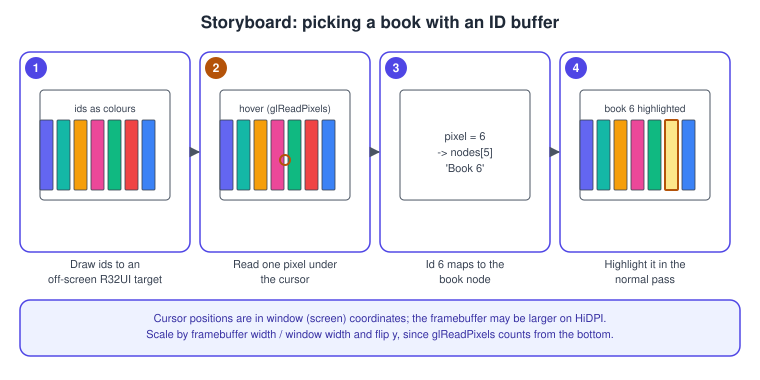
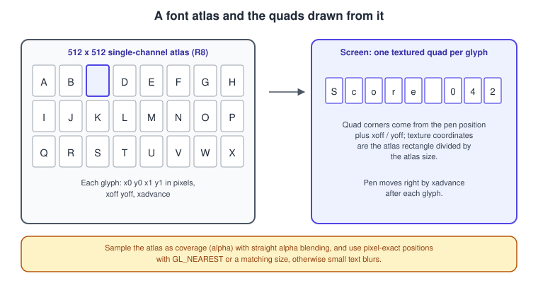

Text, UI and Input
|
This content was generated with the assistance of AI and should be verified against the official documentation before being relied on in production. |
OpenGL draws triangles into a framebuffer and does nothing else: it has no window events, no keyboard, no widgets and no text. These are the jobs of the window library (GLFW in this section), of your own code, and of helper libraries. This page covers the three things a Bookshelf program needs once the scene is lit and textured: reading input and turning it into camera movement and clicks on objects, drawing text such as a score and a timer, and building a small user interface for settings and debugging.
The facts were checked in November 2026. The versions documented are OpenGL 4.6 (GLSL 4.60) with a 4.1 core baseline, OpenGL ES 3.2 and GLFW 3.4 or later (the GLFW 3.5 series is current); the examples use GLM, stb_truetype and Dear ImGui, which you vendor or fetch with your package manager. The input of Android, which uses touch events instead of GLFW, is in OpenGL ES on Android. The concepts of timing, input mapping and game physics that apply to every API are in Physics, Audio and Input Basics and Game Loop and Frame Timing.
Input with GLFW
GLFW collects events from the operating system, and your program reads them in one of two ways: polling the current state
(glfwGetKey, glfwGetMouseButton, glfwGetCursorPos) once per frame, or callbacks (glfwSetKeyCallback and friends)
invoked from inside glfwPollEvents. Both only see new events after glfwPollEvents (or glfwWaitEvents) runs, and all
callbacks arrive on the thread that called it, which must be the main thread on macOS.
| Function | Use |
|---|---|
|
Press, repeat and release of a physical key ( |
|
Unicode code points produced by typing, honouring the layout and dead keys. Use it for text entry boxes, never for game controls. |
|
Cursor position in screen coordinates, as doubles, measured from the top-left of the window content area. |
|
Buttons ( |
|
Hides and captures the cursor for mouse-look; the cursor position then has no bounds, so use differences between frames. |
|
Maps joysticks that match the built-in SDL gamepad mapping database to a standard layout of buttons and axes; check |
|
Size of the framebuffer in pixels versus size of the window in screen coordinates. |
Source: GLFW input guide
Screen coordinates versus pixels
On a display with a scale factor (a Retina screen or a 150 percent Windows setting) the number of pixels in the
framebuffer is larger than the number of screen coordinates in the window. glViewport and glReadPixels use pixels;
glfwGetCursorPos and glfwGetWindowSize use screen coordinates. Mixing them is the most common reason for picking to
hit the wrong object or for the image to fill only a quarter of the window. Always set the viewport from
glfwGetFramebufferSize, and convert the cursor position before using it in pixel units:
#include <glad/gl.h>
#include <GLFW/glfw3.h>
#include <glm/glm.hpp>
// Cursor position in framebuffer pixels, with the origin at the bottom-left, like OpenGL.
glm::ivec2 cursorInPixels(GLFWwindow* window) {
double cx, cy;
int ww, wh, fw, fh;
glfwGetCursorPos(window, &cx, &cy);
glfwGetWindowSize(window, &ww, &wh);
glfwGetFramebufferSize(window, &fw, &fh);
double sx = double(fw) / double(ww);
double sy = double(fh) / double(wh);
return {int(cx * sx), fh - 1 - int(cy * sy)};
}Input state and an orbit camera
Keep input in a small struct that callbacks fill, and have the update step read it once per frame, so game code does not depend on the order of events inside a frame. The Bookshelf uses an orbit camera: dragging with the left button rotates around the shelf, the wheel zooms, and the keys move the target.
#include <GLFW/glfw3.h>
#include <glm/glm.hpp>
#include <glm/gtc/matrix_transform.hpp>
#include <algorithm>
struct Input {
bool keys[GLFW_KEY_LAST + 1]{};
bool leftDown = false, clickedThisFrame = false;
double lastX = 0, lastY = 0, dx = 0, dy = 0, scroll = 0;
};
struct OrbitCamera {
glm::vec3 target{0.0f, 1.0f, 0.0f};
float yaw = 0.6f, pitch = 0.3f, distance = 4.0f;
glm::mat4 view() const {
glm::vec3 eye = target + distance * glm::vec3(
std::cos(pitch) * std::sin(yaw), std::sin(pitch), std::cos(pitch) * std::cos(yaw));
return glm::lookAt(eye, target, glm::vec3(0, 1, 0));
}
void update(const Input& in, float dt) {
if (in.leftDown) {
yaw -= float(in.dx) * 0.005f;
pitch = std::clamp(pitch + float(in.dy) * 0.005f, -1.4f, 1.4f); // avoid flipping over the pole
}
distance = std::clamp(distance - float(in.scroll) * 0.3f, 1.0f, 12.0f);
glm::vec3 right{std::cos(yaw), 0, -std::sin(yaw)};
float speed = 2.0f * dt;
if (in.keys[GLFW_KEY_A]) target -= right * speed;
if (in.keys[GLFW_KEY_D]) target += right * speed;
}
};
void installCallbacks(GLFWwindow* w, Input* in) {
glfwSetWindowUserPointer(w, in);
glfwSetKeyCallback(w, [](GLFWwindow* win, int key, int, int action, int) {
auto* i = static_cast<Input*>(glfwGetWindowUserPointer(win));
if (key >= 0 && key <= GLFW_KEY_LAST) i->keys[key] = (action != GLFW_RELEASE);
if (key == GLFW_KEY_ESCAPE && action == GLFW_PRESS) glfwSetWindowShouldClose(win, GLFW_TRUE);
});
glfwSetMouseButtonCallback(w, [](GLFWwindow* win, int button, int action, int) {
auto* i = static_cast<Input*>(glfwGetWindowUserPointer(win));
if (button == GLFW_MOUSE_BUTTON_LEFT) {
i->leftDown = (action == GLFW_PRESS);
if (action == GLFW_PRESS) i->clickedThisFrame = true;
}
});
glfwSetCursorPosCallback(w, [](GLFWwindow* win, double x, double y) {
auto* i = static_cast<Input*>(glfwGetWindowUserPointer(win));
i->dx += x - i->lastX; i->dy += y - i->lastY;
i->lastX = x; i->lastY = y;
});
glfwSetScrollCallback(w, [](GLFWwindow* win, double, double yoff) {
static_cast<Input*>(glfwGetWindowUserPointer(win))->scroll += yoff;
});
}
// In the loop: glfwPollEvents(); camera.update(input, dt); input.dx = input.dy = input.scroll = 0;
// input.clickedThisFrame = false; (after the picking pass has used it)Source: GLFW input guide: keyboard input
The orbit parameters are the angles of a point on a sphere around the target. The coordinate conventions are in
Coordinate systems and transforms; for rotations with
quaternions see Rotations and Quaternions. Frame-rate independent
motion multiplies by the frame time dt, not by a constant per frame.
Older tutorials use GLUT callbacks (glutKeyboardFunc, glutMouseFunc) and the GLUT menu system. the original GLUT is unmaintained (freeglut continues it), and GLFW has no equivalent of its menus; use an immediate-mode UI such as Dear ImGui
(below) or your own widgets.
Picking: which object is under the cursor
Picking converts a 2D cursor position into an object. The first generation of OpenGL provided a selection render mode
(glRenderMode(GL_SELECT)) and a name stack for this; they were removed from the core profile and should not be used in new code. Two current techniques replace them.
ID buffer
Render the scene a second time into an off-screen framebuffer whose colour attachment is an integer texture, writing each object’s id instead of its colour. Read one pixel under the cursor and map the id back to the object. It gives exact results for any shape, including vertex-shader displacement and instancing, at the cost of an extra pass of cheap geometry.

#include <glad/gl.h>
#include <cstdint>
// Shaders for the id pass (GLSL 4.10 core, valid on macOS).
static const char* kIdVert = R"glsl(#version 410 core
layout(location = 0) in vec3 aPos;
uniform mat4 uMvp;
void main() { gl_Position = uMvp * vec4(aPos, 1.0); }
)glsl";
static const char* kIdFrag = R"glsl(#version 410 core
uniform uint uId; // 0 means "nothing", objects use 1..N
layout(location = 0) out uint outId;
void main() { outId = uId; }
)glsl";
struct IdBuffer {
GLuint fbo = 0, colour = 0, depth = 0;
int width = 0, height = 0;
void resize(int w, int h) {
if (!fbo) glGenFramebuffers(1, &fbo);
width = w; height = h;
if (colour) glDeleteTextures(1, &colour);
if (depth) glDeleteRenderbuffers(1, &depth);
glGenTextures(1, &colour);
glBindTexture(GL_TEXTURE_2D, colour);
glTexImage2D(GL_TEXTURE_2D, 0, GL_R32UI, w, h, 0, GL_RED_INTEGER, GL_UNSIGNED_INT, nullptr);
glTexParameteri(GL_TEXTURE_2D, GL_TEXTURE_MIN_FILTER, GL_NEAREST); // integer textures cannot filter
glTexParameteri(GL_TEXTURE_2D, GL_TEXTURE_MAG_FILTER, GL_NEAREST);
glGenRenderbuffers(1, &depth);
glBindRenderbuffer(GL_RENDERBUFFER, depth);
glRenderbufferStorage(GL_RENDERBUFFER, GL_DEPTH_COMPONENT24, w, h);
glBindFramebuffer(GL_FRAMEBUFFER, fbo);
glFramebufferTexture2D(GL_FRAMEBUFFER, GL_COLOR_ATTACHMENT0, GL_TEXTURE_2D, colour, 0);
glFramebufferRenderbuffer(GL_FRAMEBUFFER, GL_DEPTH_ATTACHMENT, GL_RENDERBUFFER, depth);
if (glCheckFramebufferStatus(GL_FRAMEBUFFER) != GL_FRAMEBUFFER_COMPLETE) { /* report */ }
glBindFramebuffer(GL_FRAMEBUFFER, 0);
}
void begin() {
glBindFramebuffer(GL_FRAMEBUFFER, fbo);
glViewport(0, 0, width, height);
const GLuint zero = 0;
glClearBufferuiv(GL_COLOR, 0, &zero); // integer targets are cleared with glClearBuffer*
glClear(GL_DEPTH_BUFFER_BIT);
glEnable(GL_DEPTH_TEST);
glDisable(GL_BLEND); // blending would corrupt ids
}
void end() { glBindFramebuffer(GL_FRAMEBUFFER, 0); }
// x, y in framebuffer pixels, origin bottom-left.
uint32_t read(int x, int y) {
if (x < 0 || y < 0 || x >= width || y >= height) return 0;
uint32_t id = 0;
glBindFramebuffer(GL_READ_FRAMEBUFFER, fbo);
glReadBuffer(GL_COLOR_ATTACHMENT0);
glReadPixels(x, y, 1, 1, GL_RED_INTEGER, GL_UNSIGNED_INT, &id);
glBindFramebuffer(GL_READ_FRAMEBUFFER, 0);
return id;
}
};
// Per click:
// ids.begin();
// for each book i: glUseProgram(idProgram); glUniform1ui(uIdLoc, i + 1);
// glUniformMatrix4fv(uMvpLoc, 1, GL_FALSE, &mvp[0][0]); drawBook(i);
// ids.end();
// auto p = cursorInPixels(window); uint32_t picked = ids.read(p.x, p.y); // 0 = noneSource: OpenGL 4 reference: glReadPixels
Notes on the ID buffer:
-
An integer format cannot be filtered or blended, and the framebuffer must not be multisampled. Keep this target separate from the MSAA scene target.
-
glReadPixelswaits until the GPU finishes the pass, so reading one pixel on click is fine, but doing it every frame stalls the pipeline. For hover effects read through a pixel pack buffer (GL_PIXEL_PACK_BUFFER) and a fence, and use the result one or two frames later; see Performance. -
Render the id pass at a lower resolution, or only draw the few pixels under the cursor with a scissor box (
glScissoraround the cursor), to keep it cheap. -
An alternative that works on ES 2.0 is to encode the id into an RGBA8 colour and read the four bytes back.
Ray picking
The alternative is to cast a ray from the camera through the cursor and test it against bounding volumes or triangles on the CPU. It needs no extra pass and is the choice when the objects already live in a physics or spatial structure.
#include <glm/glm.hpp>
#include <glm/gtc/matrix_transform.hpp>
#include <optional>
#include <algorithm>
struct Ray { glm::vec3 origin, dir; };
// Window position in screen coordinates (top-left origin) to a world-space ray.
Ray rayFromCursor(double cx, double cy, int winW, int winH, const glm::mat4& view, const glm::mat4& proj) {
float ndcX = float(2.0 * cx / winW - 1.0);
float ndcY = float(1.0 - 2.0 * cy / winH); // flip y: window y grows downward
glm::mat4 inv = glm::inverse(proj * view);
glm::vec4 nearP = inv * glm::vec4(ndcX, ndcY, -1.0f, 1.0f);
glm::vec4 farP = inv * glm::vec4(ndcX, ndcY, 1.0f, 1.0f);
nearP /= nearP.w; farP /= farP.w;
return {glm::vec3(nearP), glm::normalize(glm::vec3(farP - nearP))};
}
// Slab test against an axis-aligned box in world space. Returns the entry distance.
std::optional<float> intersectAabb(const Ray& r, glm::vec3 bmin, glm::vec3 bmax) {
glm::vec3 inv = 1.0f / r.dir;
glm::vec3 t0 = (bmin - r.origin) * inv, t1 = (bmax - r.origin) * inv;
glm::vec3 tmin = glm::min(t0, t1), tmax = glm::max(t0, t1);
float tNear = std::max({tmin.x, tmin.y, tmin.z});
float tFar = std::min({tmax.x, tmax.y, tmax.z});
if (tFar < 0.0f || tNear > tFar) return std::nullopt;
return std::max(tNear, 0.0f);
}The unprojection above assumes the default clip volume with z from -1 to 1. If you use glClipControl with a zero-to-one
depth range (reverse-Z), the near plane is at NDC z = 0 instead; see
Cameras and projection. Choose the ID buffer when the shapes are
complicated or animated by shaders, and the ray when you also need the world-space hit point or already maintain bounding volumes.
Rendering text
OpenGL has no text drawing. The standard technique is a font atlas: render each glyph of a font once into a texture, and draw each character of a string as a textured quad that samples the atlas rectangle of its glyph.

Choices, from simplest to most capable:
-
Baked bitmap atlas with stb_truetype: one font at one pixel size, ASCII or a few ranges. Sharp at that size, blurry when scaled.
-
Signed distance field (SDF) atlas: each texel stores the distance to the glyph outline, and a fragment shader thresholds it with
smoothstep, so one atlas scales cleanly across sizes and supports outlines and shadows cheaply. Fine detail at sharp corners is lost; multi-channel SDF variants keep it. -
FreeType rasterises glyphs on demand at any size and hinting setting, which suits dynamic or many-language text, with a glyph cache that packs new glyphs into an atlas as they appear.
-
Text shaping: scripts with ligatures or right-to-left order (Arabic, Hebrew, Indic scripts) need a shaper such as HarfBuzz to turn code points into positioned glyphs before drawing. Latin text with simple left-to-right layout does not.
-
Never rebuild a vertex buffer per character per frame with separate draw calls. Batch all text of a frame into one buffer and one draw call (see the streaming section on the performance page).
A baked atlas with stb_truetype
#define STB_TRUETYPE_IMPLEMENTATION
#include "stb_truetype.h"
#include <glad/gl.h>
#include <fstream>
#include <vector>
#include <string>
#include <stdexcept>
struct TextRenderer {
static constexpr int kAtlas = 512;
stbtt_bakedchar glyphs[96]; // ASCII 32..127
GLuint texture = 0, vao = 0, vbo = 0, program = 0;
void init(const char* ttfPath, float pixelHeight) {
std::ifstream f(ttfPath, std::ios::binary);
if (!f) throw std::runtime_error("font not found");
std::vector<unsigned char> ttf((std::istreambuf_iterator<char>(f)), {});
std::vector<unsigned char> alpha(kAtlas * kAtlas);
if (stbtt_BakeFontBitmap(ttf.data(), 0, pixelHeight, alpha.data(), kAtlas, kAtlas, 32, 96, glyphs) <= 0)
throw std::runtime_error("atlas too small for this pixel height");
glGenTextures(1, &texture);
glBindTexture(GL_TEXTURE_2D, texture);
glPixelStorei(GL_UNPACK_ALIGNMENT, 1); // single-channel rows are not multiples of 4
glTexImage2D(GL_TEXTURE_2D, 0, GL_R8, kAtlas, kAtlas, 0, GL_RED, GL_UNSIGNED_BYTE, alpha.data());
glTexParameteri(GL_TEXTURE_2D, GL_TEXTURE_MIN_FILTER, GL_LINEAR);
glTexParameteri(GL_TEXTURE_2D, GL_TEXTURE_MAG_FILTER, GL_LINEAR);
glTexParameteri(GL_TEXTURE_2D, GL_TEXTURE_WRAP_S, GL_CLAMP_TO_EDGE);
glTexParameteri(GL_TEXTURE_2D, GL_TEXTURE_WRAP_T, GL_CLAMP_TO_EDGE);
glGenVertexArrays(1, &vao);
glGenBuffers(1, &vbo);
glBindVertexArray(vao);
glBindBuffer(GL_ARRAY_BUFFER, vbo);
glEnableVertexAttribArray(0);
glVertexAttribPointer(0, 4, GL_FLOAT, GL_FALSE, 4 * sizeof(float), nullptr); // xy position, uv
// program = link(textVertexShader, textFragmentShader);
}
// Draws a string with its baseline starting at (x, y), in framebuffer pixels, y growing downward.
void draw(const std::string& s, float x, float y, int fbW, int fbH) {
std::vector<float> verts; // 6 vertices per glyph
for (unsigned char c : s) {
if (c < 32 || c >= 128) continue;
stbtt_aligned_quad q;
stbtt_GetBakedQuad(glyphs, kAtlas, kAtlas, c - 32, &x, &y, &q, 1);
const float v[] = {q.x0, q.y0, q.s0, q.t0, q.x1, q.y0, q.s1, q.t0, q.x1, q.y1, q.s1, q.t1,
q.x0, q.y0, q.s0, q.t0, q.x1, q.y1, q.s1, q.t1, q.x0, q.y1, q.s0, q.t1};
verts.insert(verts.end(), std::begin(v), std::end(v));
}
glUseProgram(program);
glUniform2f(glGetUniformLocation(program, "uScreen"), float(fbW), float(fbH));
glActiveTexture(GL_TEXTURE0);
glBindTexture(GL_TEXTURE_2D, texture);
glEnable(GL_BLEND);
glBlendFunc(GL_SRC_ALPHA, GL_ONE_MINUS_SRC_ALPHA);
glDisable(GL_DEPTH_TEST);
glBindVertexArray(vao);
glBindBuffer(GL_ARRAY_BUFFER, vbo);
glBufferData(GL_ARRAY_BUFFER, verts.size() * sizeof(float), verts.data(), GL_STREAM_DRAW);
glDrawArrays(GL_TRIANGLES, 0, GLsizei(verts.size() / 4));
}
};Source: OpenGL 4 reference: glTexImage2D
The shaders convert pixel positions to clip space and read the alpha from the red channel of the atlas:
#version 410 core
// text.vert
layout(location = 0) in vec4 aPosUv; // xy: pixels, zw: atlas uv
uniform vec2 uScreen;
out vec2 vUv;
void main() {
vec2 ndc = vec2(aPosUv.x / uScreen.x * 2.0 - 1.0, 1.0 - aPosUv.y / uScreen.y * 2.0);
gl_Position = vec4(ndc, 0.0, 1.0);
vUv = aPosUv.zw;
}#version 410 core
// text.frag
in vec2 vUv;
uniform sampler2D uAtlas;
uniform vec4 uColor;
out vec4 fragColor;
void main() {
float a = texture(uAtlas, vUv).r; // coverage from the single-channel atlas
fragColor = vec4(uColor.rgb, uColor.a * a);
}Source: GLSL 4.60 specification
Position text at integer pixel coordinates and draw it at the atlas’s native pixel size when you want crisp results, and remember that the atlas stores coverage, so colour comes from a uniform and the blend uses straight alpha. On a HiDPI display, bake the font at the framebuffer pixel height (the logical size times the scale factor).
An immediate-mode UI with Dear ImGui
Dear ImGui is an immediate-mode UI library: every frame your code calls functions such as ImGui::Slider, the library
builds a list of vertices and draw commands, and a backend renders them. There is no widget tree to maintain. It is the usual
choice for tools, debug panels and settings in OpenGL programs, with ready-made backends for GLFW and OpenGL 3 (the
OpenGL 3 backend supports desktop OpenGL and OpenGL ES, selected by the GLSL version string you pass).
#include "imgui.h"
#include "imgui_impl_glfw.h"
#include "imgui_impl_opengl3.h"
#include <glad/gl.h>
#include <GLFW/glfw3.h>
struct Settings { float lampIntensity = 1.0f; bool shadows = true; int msaa = 4; };
void initUi(GLFWwindow* window) {
IMGUI_CHECKVERSION();
ImGui::CreateContext();
ImGuiIO& io = ImGui::GetIO();
io.ConfigFlags |= ImGuiConfigFlags_NavEnableKeyboard;
ImGui::StyleColorsDark();
ImGui_ImplGlfw_InitForOpenGL(window, true); // true: install GLFW callbacks and chain yours
ImGui_ImplOpenGL3_Init("#version 410 core"); // match the context; "#version 300 es" on ES 3.0
}
void drawUi(Settings& s, double frameMs, int score, double secondsLeft) {
ImGui_ImplOpenGL3_NewFrame();
ImGui_ImplGlfw_NewFrame();
ImGui::NewFrame();
ImGui::Begin("Bookshelf GL");
ImGui::Text("Frame %.2f ms", frameMs);
ImGui::SliderFloat("Lamp intensity", &s.lampIntensity, 0.0f, 4.0f);
ImGui::Checkbox("Shadows", &s.shadows);
ImGui::Text("Score %d Time %.0f s", score, secondsLeft);
ImGui::End();
ImGui::Render();
ImGui_ImplOpenGL3_RenderDrawData(ImGui::GetDrawData()); // call after the scene, before the swap
}
void shutdownUi() {
ImGui_ImplOpenGL3_Shutdown();
ImGui_ImplGlfw_Shutdown();
ImGui::DestroyContext();
}
// In the loop, decide who owns the mouse:
// glfwPollEvents();
// if (!ImGui::GetIO().WantCaptureMouse) handleSceneInput(); // do not pick a book through a windowDetails to get right: the UI renders with its own program and state, and the backend saves and restores the
OpenGL state it changes, so it works anywhere in your frame. Draw it last, directly to the default framebuffer
(or to the final target), and do not let the UI texture go through your tone-mapping or sRGB conversion unless you want it to.
WantCaptureMouse and WantCaptureKeyboard tell you whether ImGui consumed an event, which keeps the shelf from
rotating while you drag a slider. For in-game menus with a custom style, a small set of your own quads plus the text
renderer above is enough, and retained UI libraries or the engine’s GUI are the next step for complex screens.
HUD for the catch-the-falling-book game
The final Bookshelf step shows a score and a countdown in the corner. Keep a rule of separation: the game state owns the numbers, and the draw code formats and draws them.
#include <string>
#include <cstdio>
struct GameState { int score = 0; double timeLeft = 60.0; bool over = false; };
void updateGame(GameState& g, double dt, int caught) {
if (g.over) return;
g.score += caught;
g.timeLeft -= dt;
if (g.timeLeft <= 0.0) { g.timeLeft = 0.0; g.over = true; }
}
void drawHud(TextRenderer& text, const GameState& g, int fbW, int fbH) {
char buf[64];
std::snprintf(buf, sizeof buf, "Score %d", g.score);
text.draw(buf, 24.0f, 48.0f, fbW, fbH);
std::snprintf(buf, sizeof buf, "Time %02d:%02d", int(g.timeLeft) / 60, int(g.timeLeft) % 60);
text.draw(buf, float(fbW) - 220.0f, 48.0f, fbW, fbH);
if (g.over) text.draw("Game over - press R", float(fbW) / 2 - 150.0f, float(fbH) / 2, fbW, fbH);
}Source: GLFW input guide
Use the frame time measured with glfwGetTime for the timer, not a frame counter, and pause the countdown when the
window loses focus (glfwSetWindowFocusCallback) if the game should wait for the player.
Common mistakes
| Symptom | Cause and fix |
|---|---|
Picking is offset, worse on a high-DPI screen |
Window coordinates used as pixels; scale by the framebuffer-to-window ratio and flip y. |
Picking returns 0 for everything |
The id pass was cleared with |
Text is blurry |
Baked at a different size from the one drawn, positions are not integers, or linear filtering on a scaled atlas. |
Text shows as solid boxes |
Atlas uploaded with the wrong alignment ( |
UI buttons also move the camera |
The scene input handler ignores |
Keys act on the wrong letters on other keyboard layouts |
Used |
Mouse-look jumps on the first frame |
The last cursor position was not initialised when the cursor was captured. |
Movement speed depends on the frame rate |
Not multiplied by the frame time. |
Recent changes
-
The selection and feedback render modes of OpenGL 1.x (
glRenderMode) are not available in the core profile; the ID buffer and ray picking above replace them. -
GLFW’s gamepad API (since 3.3) maps joysticks to a standard layout, replacing the per-device joystick axes that older tutorials hard-code.
-
Dear ImGui’s OpenGL 3 backend is the maintained choice; the OpenGL 2 fixed-function backend exists only for legacy contexts.